pacman::p_load(tidyverse, sf, terra, tidyterra, stars,
patchwork, gstat, automap, mgcv)Interpolation
Needed libraries
What is interpolation?
Interpolation is the process of predicting the value of some variable at unsampled locations, based on observations at sampled ones. In spatial analysis, it is most commonly used to convert a set of point observations into a continuous surface — typically a raster.
Every interpolation method is a model, and every model makes assumptions. Choosing the right method depends on the nature of your data and what you know (or can reasonably assume) about the underlying spatial process. The main methods covered here, roughly in order of complexity, are:
| Method | Assumptions | Best for |
|---|---|---|
| Voronoi / proximity polygons | Value constant within nearest-neighbour region | A simple, assumption-free baseline |
| Nearest neighbour (NN) | Value determined solely by the closest point(s) | Categorical data or a quick check |
| Inverse distance weighting (IDW) | Closer observations are more similar; no explicit model | Smooth continuous surfaces, fast |
| Ordinary kriging | Spatial autocorrelation follows a stationary variogram model | When spatial structure can be modelled; provides uncertainty estimates |
| GAMs with spatial smooths | Spatial trend is a smooth function of coordinates | When you also want to include non-spatial covariates |
ImportantProject your data before interpolating
All distance-based interpolation methods require a projected coordinate system (metres, not degrees). Use st_transform(x, crs) to reproject before fitting any model. See the CRS chapter for guidance on choosing a projection appropriate to your study area.
Data preparation
We will interpolate cod biomass from the 2018 Icelandic spring bottom trawl survey (SMB). The data are loaded once here and reused across all sections.
biol <- read_csv("./data/is_smb_biological.csv") %>%
filter(species == "cod")
cod <- read_csv("./data/is_smb_stations.csv") %>%
filter(year == 2018) %>%
left_join(biol, by = "id") %>%
mutate(kg = replace_na(kg, 0)) %>%
dplyr::select(id, lon1, lat1, kg, n, duration) %>%
st_as_sf(coords = c("lon1", "lat1"), crs = 4326) %>%
st_transform(3395) # World Mercator — projected, units in metres
iceland <- read_sf("./data/iceland_coastline.gpkg") %>%
st_transform(3395)A quick look at the distribution of the response variable. Fisheries catch data is typically zero-inflated and strongly right-skewed, which will matter when choosing how to model it.
p1 <- ggplot(cod) +
geom_sf(aes(size = kg), alpha = 0.3, colour = "red",
show.legend = "point") +
geom_sf(data = iceland, fill = "grey80", colour = NA) +
scale_size_area(max_size = 8) +
labs(size = "Cod (kg)", title = "Station biomass") +
theme_bw()
p2 <- ggplot(cod, aes(x = kg)) +
geom_histogram(bins = 40, fill = "steelblue", colour = "white") +
scale_x_continuous(labels = scales::comma) +
labs(x = "Cod (kg)", y = "Count", title = "Distribution of kg") +
theme_bw()
p1 + p2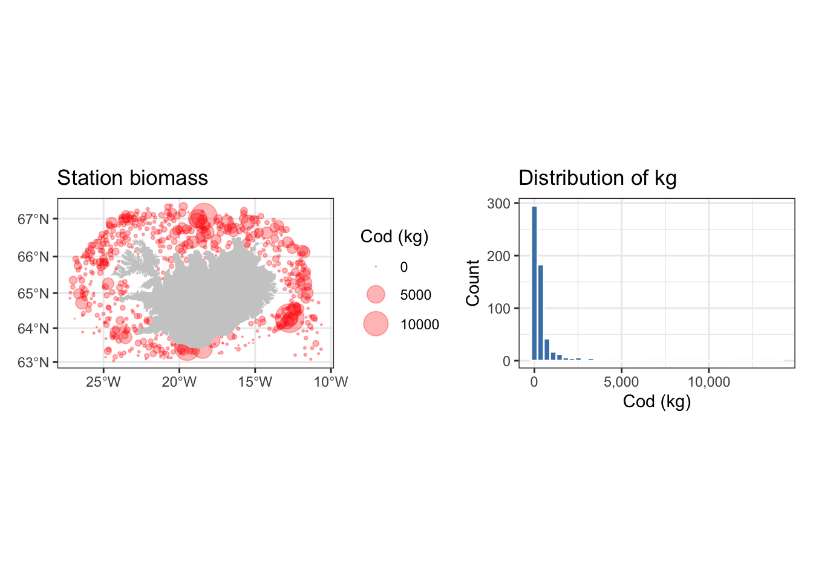
Building a prediction grid and mask
All raster-based interpolation methods need a target grid (where to predict) and a mask (where predictions are meaningful). We build these once and reuse them.
The mask is defined as the convex hull of the sampling locations, buffered by 50 km, with land removed. This avoids predicting in areas far outside the survey coverage or on land.
# Convex hull of stations, buffered, land removed
pts_combined <- st_combine(cod) # MULTIPOINT, needed for st_convex_hull
survey_mask <- st_convex_hull(pts_combined) %>%
st_buffer(50000) %>% # 50 km buffer
st_difference(st_union(iceland)) %>%
st_as_sf()
ggplot() +
geom_sf(data = survey_mask, fill = "lightblue", alpha = 0.5) +
geom_sf(data = iceland, fill = "grey80") +
geom_sf(data = cod, colour = "red", size = 0.8) +
labs(title = "Survey mask (blue) and stations (red)") +
theme_bw()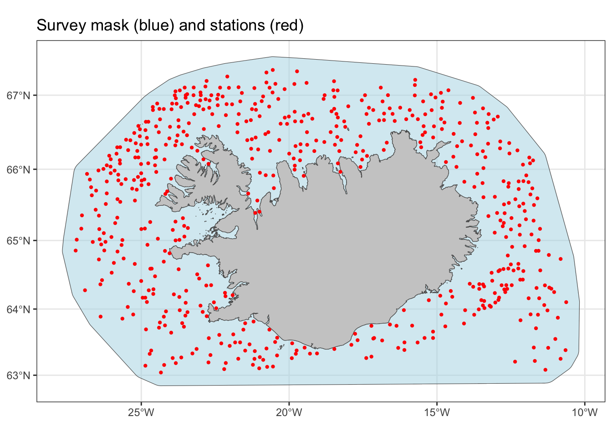
Now we create a 2 km resolution target SpatRaster using terra, and rasterise the mask onto it:
bb <- st_bbox(survey_mask)
target <- terra::rast(
xmin = bb["xmin"], xmax = bb["xmax"],
ymin = bb["ymin"], ymax = bb["ymax"],
resolution = 2000,
crs = crs(vect(cod))
)
mask_rst <- terra::rasterize(survey_mask, target)
NoteExercise
The 2 km resolution is a reasonable starting point for this survey, but it is somewhat arbitrary. Repeat the data preparation with resolutions of 5 km and 10 km. How does the choice of resolution affect the visual appearance and computation time of the interpolations below?
Voronoi (proximity) polygons
The simplest spatial interpolation: each prediction location is assigned the value of its nearest observation. The result is a set of Voronoi polygons (also called Thiessen polygons), where each polygon contains all points closer to its seed station than to any other.
Voronoi polygons make no assumptions about spatial autocorrelation and require no model fitting. They are a good baseline to compare other methods against, but produce discontinuous (blocky) surfaces.
vor <- st_voronoi(pts_combined) %>%
st_collection_extract("POLYGON") %>%
st_intersection(survey_mask) %>% # Clip to the survey area
st_as_sf() %>%
st_join(cod) # Attach the cod data via spatial join
ggplot() +
geom_sf(data = vor, aes(fill = kg), colour = NA) +
geom_sf(data = iceland, fill = "grey70", colour = NA) +
geom_sf(data = cod, colour = "red", size = 0.5) +
scale_fill_viridis_c(trans = "log1p", name = "Cod (kg)") +
labs(title = "Voronoi interpolation") +
theme_bw()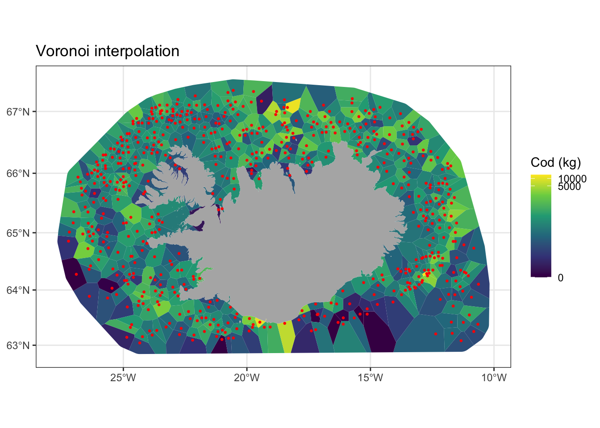
We can rasterise the Voronoi polygons onto the target grid using terra::rasterize():
vor_rst <- rasterize(vor, target,
field = "kg", fun = "mean")
ggplot() +
geom_spatraster(data = vor_rst) +
geom_sf(data = iceland, fill = "grey70", colour = NA) +
scale_fill_viridis_c(trans = "log1p", name = "Cod (kg)", na.value = NA) +
labs(title = "Voronoi — rasterised to 2 km grid") +
theme_bw()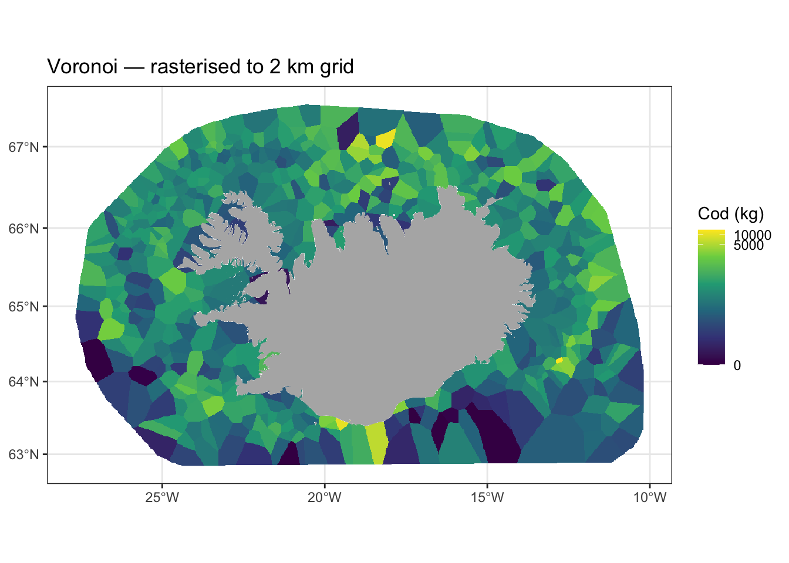
Inverse distance weighting (IDW)
In IDW, the predicted value at each location is a weighted average of all observations. The weight assigned to each observation decays with distance, controlled by the power parameter p (idp in gstat):
\[\hat{z}(s_0) = \frac{\sum_{i=1}^{n} w_i \, z(s_i)}{\sum_{i=1}^{n} w_i}, \quad w_i = \frac{1}{d(s_0, s_i)^p}\]
- A higher p gives more weight to nearby observations (more local, spikier surface).
- p = 0 gives equal weight to all observations everywhere (predicts the global mean).
- p = 2.5 is the conventional default.
Note than gstat::idw() takes an sf object, but the raster for newdata needs to be of class stars. The output is also of class stars, and we convert it to a terra raster.
# Default p = 2 (idp = 2)
idw_p2 <- gstat::idw(kg ~ 1,
locations = cod,
newdata = st_as_stars(target),
idp = 2) |>
rast() [inverse distance weighted interpolation]names(idw_p2) <- c("pred","var")
idw_p2 <- mask(idw_p2, mask_rst)
# Higher power — more local influence
idw_p5 <- gstat::idw(kg ~ 1,
locations = cod,
newdata = st_as_stars(target),
idp = 5) |>
rast() [inverse distance weighted interpolation]names(idw_p5) <- c("pred","var")
idw_p5 <- mask(idw_p5, mask_rst)p_idw2 <- ggplot() +
geom_spatraster(data = idw_p2$pred) +
geom_sf(data = iceland, fill = "grey70", colour = NA) +
scale_fill_viridis_c(trans = "log1p", name = "Cod (kg)", na.value = NA) +
labs(title = "IDW (p = 2)") +
theme_bw()
p_idw5 <- ggplot() +
geom_spatraster(data = idw_p5$pred) +
geom_sf(data = iceland, fill = "grey70", colour = NA) +
scale_fill_viridis_c(trans = "log1p", name = "Cod (kg)", na.value = NA) +
labs(title = "IDW (p = 5)") +
theme_bw()
p_idw2 + p_idw5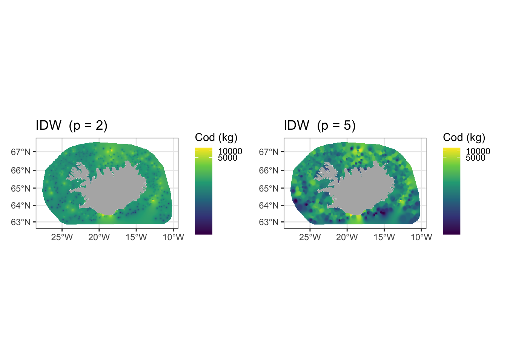
The higher power (p = 5) produces a more pitted surface, with bull’s-eye patterns around individual stations. Notice how IDW never predicts values outside the range of the observations, and always produces a minimum at sample locations when surrounding values are higher — a known artefact.
IDW does not provide prediction uncertainty estimates.
NoteExercise
The optimal p value can be selected by leave-one-out cross-validation (LOOCV): for each station, remove it, predict its value from the remaining stations, and compare the prediction to the observed value.
Use a for loop (or purrr::map()) over a grid of p values from 0.5 to 6 in steps of 0.5. For each p, compute the root mean square error (RMSE) of the LOOCV predictions. Which p minimises RMSE? Does it matter whether you compute RMSE on raw or log-transformed values?
Hint: gstat::idw() with nmax = nrow(cod) - 1 and newdata = cod gives leave-one-out predictions in one call.
Ordinary kriging
Kriging is a family of geostatistical interpolation methods. Unlike IDW, kriging derives the weights from a fitted model of the spatial autocorrelation structure of the data — the variogram. This makes kriging a Best Linear Unbiased Predictor (BLUP): optimal in the sense of minimising prediction variance, given the variogram model is correct. A key advantage over IDW is that kriging also provides a prediction variance (uncertainty surface) alongside the predicted values.
Ordinary kriging (OK) assumes:
- The variable has a constant but unknown mean across the study area (stationarity).
- The spatial correlation between two locations depends only on the distance (and possibly direction) between them, not on their absolute position (second-order stationarity).
For strongly skewed data like catch biomass, it is common to work in log space and back-transform the predictions.
Step 1 — Explore the data distribution
ggplot(cod, aes(x = kg)) +
geom_histogram(bins = 40, fill = "steelblue", colour = "white") +
labs(x = "Cod biomass (kg)", y = "Count",
title = "Raw distribution — strongly right-skewed") +
theme_bw()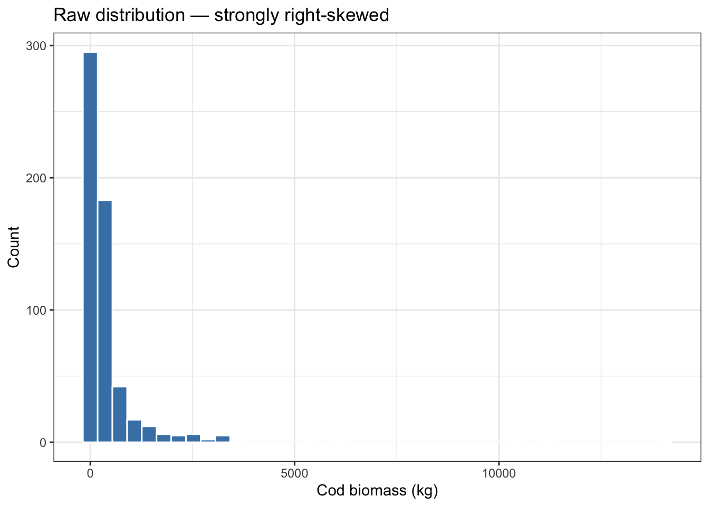
ggplot(cod, aes(x = log1p(kg))) +
geom_histogram(bins = 40, fill = "steelblue", colour = "white") +
labs(x = "log(1 + Cod biomass)", y = "Count",
title = "Log(1+x) transformed — more symmetric") +
theme_bw()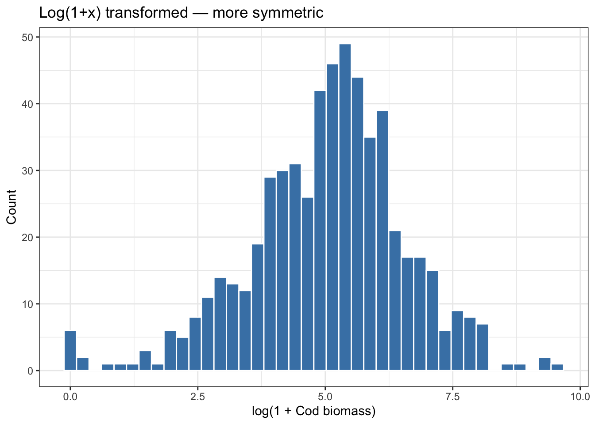
The log transformation makes the distribution more symmetric and closer to the normality assumption that underlies kriging theory.
Step 2 — Compute the experimental variogram
The variogram summarises how dissimilarity between pairs of observations increases with the distance separating them. For a variable Z at locations s:
\[\hat{\gamma}(h) = \frac{1}{2|N(h)|} \sum_{(i,j) \in N(h)} [Z(s_i) - Z(s_j)]^2\]
where N(h) is the set of all pairs separated by lag distance h.
# log1p transform before computing the variogram
vg_exp <- gstat::variogram(log1p(kg) ~ 1, data = cod)
plot(vg_exp,
main = "Experimental variogram — log(1 + cod kg)")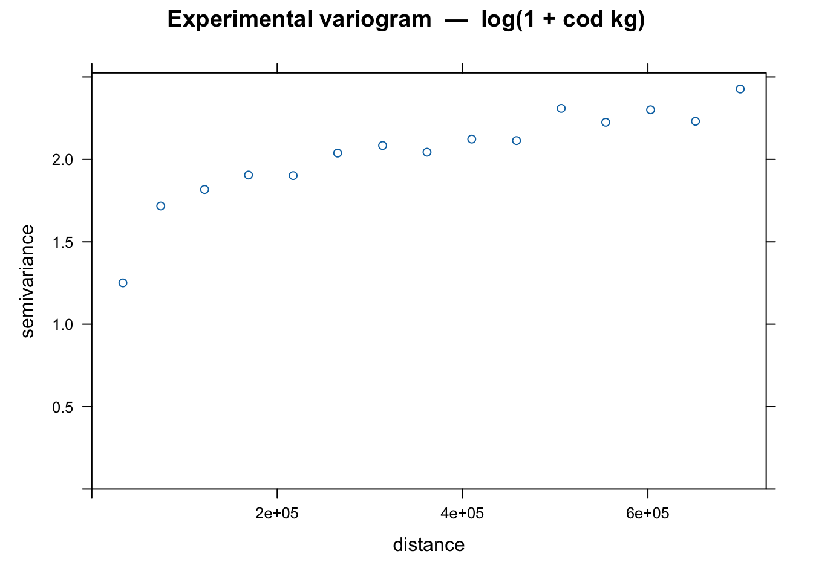
Key features to look for:
- Nugget: the semivariance at distance ≈ 0. Represents measurement error and spatial variation at scales smaller than the sampling interval.
- Sill: the semivariance at which the variogram levels off. Roughly the variance of the data.
- Range: the distance at which the variogram reaches the sill. Beyond this distance, observations are no longer spatially autocorrelated.
Step 3 — Fit a variogram model
A parametric model must be fitted to the experimental variogram before kriging. automap::autofitVariogram() automates the model selection and fitting, trying several common models and returning the best fit. This is a good starting point, though manual fitting (as shown below) gives more control.
# Automated fitting — useful as a starting point
vg_auto <- automap::autofitVariogram(log1p(kg) ~ 1, input_data = cod)
plot(vg_auto)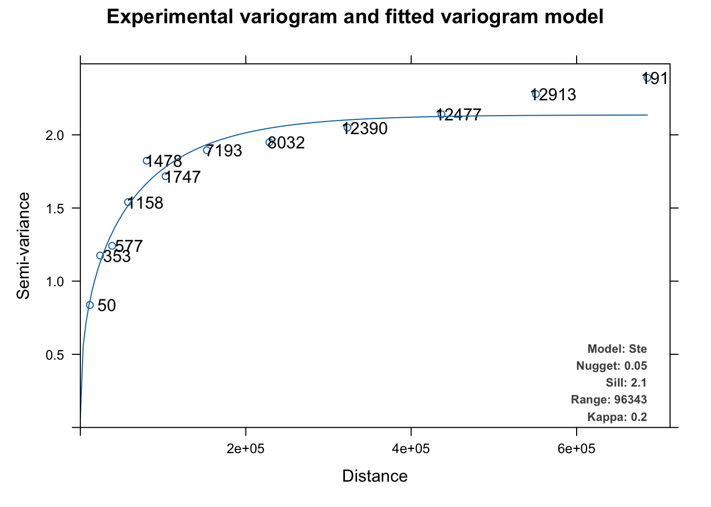
Manual fitting, using the experimental variogram as a guide:
# Initial model: exponential with estimated nugget, sill and range
vg_model <- gstat::vgm(
model = "Exp", # Exponential model
psill = 1.8, # Partial sill (sill - nugget)
range = 200000, # Range (metres)
nugget = 0.3 # Nugget
)
# Fit to the experimental variogram using weighted least squares
vg_fit <- gstat::fit.variogram(vg_exp, model = vg_model)
plot(vg_exp, vg_fit,
main = "Fitted variogram model (exponential)")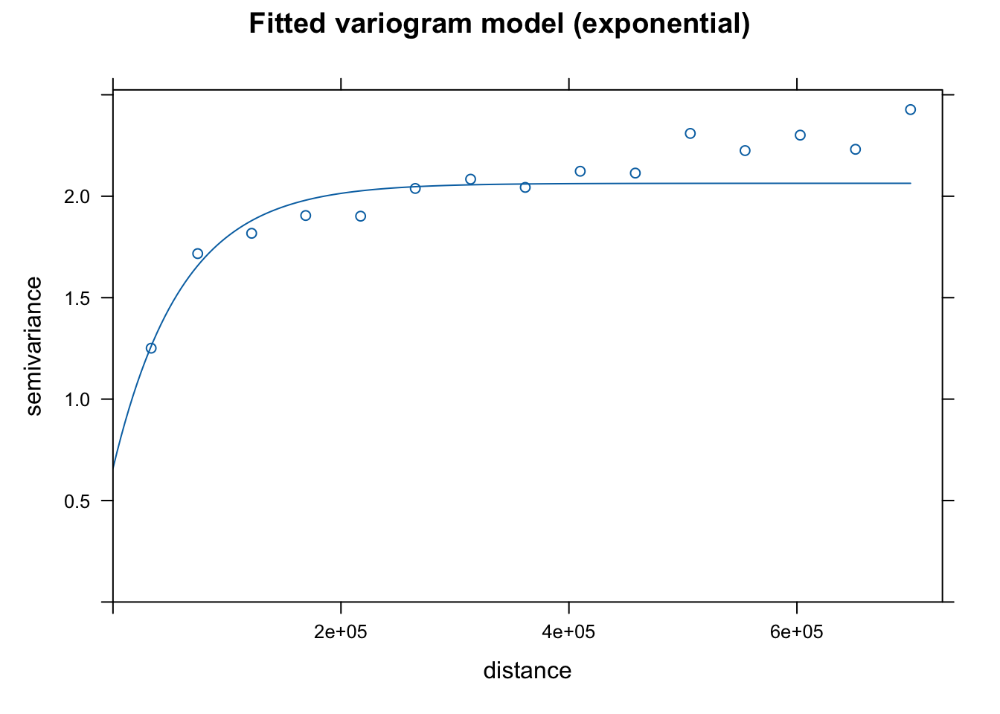
print(vg_fit) model psill range
1 Nug 0.6586561 0.00
2 Exp 1.4050724 59837.73Common variogram models available in gstat:
| Model | Shape | Use |
|---|---|---|
"Exp" |
Exponential | Asymptotically reaches sill; no true range |
"Sph" |
Spherical | Reaches sill at finite range; most common |
"Gau" |
Gaussian | Very smooth; often over-smooths |
"Mat" |
Matérn | Flexible; controlled by smoothness parameter κ |
TipChoosing a variogram model
There is no universally correct choice. The exponential and spherical models are the most widely used. The key is that the fitted model should match the shape of the experimental variogram well, particularly at short distances (the nugget and the initial rise) where kriging weights are most sensitive.
Step 4 — Krige
gstat::krige() takes the sf data, the fitted variogram, and the target stars. It returns a raster with two layers: var1.pred (predictions) and var1.var (prediction variance).
kriged <- gstat::krige(
formula = log1p(kg) ~ 1,
locations = cod,
newdata = st_as_stars(target),
model = vg_fit
)|>
rast() [using ordinary kriging]names(kriged) <- c("pred","var")
# Extract and back-transform the prediction layer
pred_rst <- terra::mask(expm1(kriged$pred), mask_rst)
# The variance is in log space — useful for uncertainty mapping
# but back-transformation is non-trivial; show it in log space
var_rst <- terra::mask(kriged$var, mask_rst)
names(pred_rst) <- "Predicted cod (kg)"
names(var_rst) <- "Kriging variance (log scale)"p_krige <- ggplot() +
geom_spatraster(data = pred_rst) +
geom_sf(data = iceland, fill = "grey70", colour = NA) +
geom_sf(data = cod, colour = "white", size = 0.4, alpha = 0.6) +
scale_fill_viridis_c(trans = "log1p",
name = "Cod (kg)",
na.value = NA) +
labs(title = "Ordinary kriging — predicted biomass") +
theme_bw()
p_var <- ggplot() +
geom_spatraster(data = var_rst) +
geom_sf(data = iceland, fill = "grey70", colour = NA) +
geom_sf(data = cod, colour = "white", size = 0.4, alpha = 0.6) +
scale_fill_viridis_c(name = "Variance\n(log scale)",
na.value = NA,
option = "magma") +
labs(title = "Kriging prediction variance",
subtitle = "Higher = less certain") +
theme_bw()
p_krige + p_var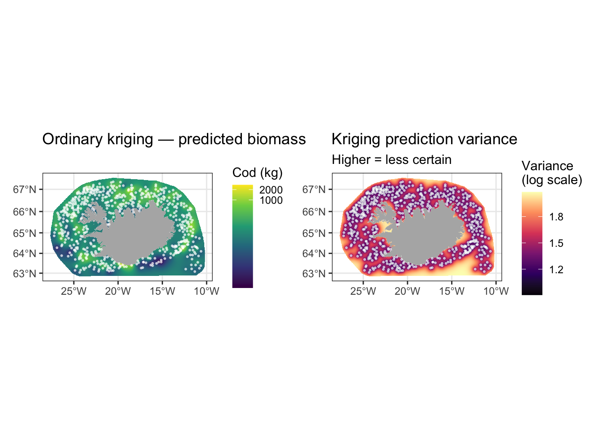
Notice that prediction variance is lowest near sampling stations and increases in areas with sparse coverage. This is a key advantage of kriging over IDW: it makes its uncertainty explicit.
NoteExercise
The variogram model above uses an exponential function. Refit the variogram using a spherical (
"Sph") and a Matérn ("Mat") model. Compare the fitted curves visually and compare the resulting kriged surfaces. How sensitive are the predictions to the choice of variogram model?Compute the 95% prediction interval at each cell. Under the assumption of log-normal errors, the interval on the original scale is approximately
[expm1(pred - 2*sqrt(var)), expm1(pred + 2*sqrt(var))]. Map the width of this interval. Where is uncertainty greatest and why?
Universal kriging (kriging with external drift)
Ordinary kriging assumes a constant spatial mean. When you have a covariate that explains part of the spatial trend — such as bottom depth explaining cod distribution — universal kriging (also called kriging with external drift, KED) incorporates it into the model. The formula changes from log1p(kg) ~ 1 (constant mean) to log1p(kg) ~ depth (mean varies as a linear function of depth):
# Example — requires a depth raster resampled to the same grid as `target`
depth_rst <- rast("./data/Iceland_depth.tif")
depth_rst[depth_rst>0] <- NA
depth_at_stations <- terra::extract(depth_rst, cod) |>
pull(layer) # So we get a vector
cod <- cod |>
mutate(depth = depth_at_stations) |>
filter(!is.na(depth))
vg_uk <- gstat::variogram(log1p(kg) ~ depth, data = cod)
vg_uk_fit <- gstat::fit.variogram(vg_uk, gstat::vgm("Exp"))
# For "newdata" we need that the target raster contains a `depth` layer
target_d <- project(depth_rst,target)
names(target_d) <- "depth"
target_d <- st_as_stars(target_d)
kriged_uk <- gstat::krige(
formula = log1p(kg) ~ depth,
locations = cod,
newdata = target_d,
model = vg_uk_fit
) |>
rast()[using universal kriging]names(kriged_uk) <- c("pred","var")
# Extract and back-transform the prediction layer
pred_rst_uk <- mask(expm1(kriged_uk$pred), mask_rst)
# .. keep the variance in log space
var_rst_uk <- mask(kriged_uk$var, mask_rst)
names(pred_rst_uk) <- "Predicted cod (kg)"
names(var_rst_uk) <- "Kriging Variance (log scale)"Universal kriging can substantially improve predictions when a good covariate is available, but it requires the covariate to be known everywhere in the prediction domain (i.e. on the target grid), not just at the sample locations.
p_krige_uk <- ggplot() +
geom_spatraster(data = pred_rst_uk) +
geom_sf(data = iceland, fill = "grey70", colour = NA) +
geom_sf(data = cod, colour = "white", size = 0.4, alpha = 0.6) +
scale_fill_viridis_c(trans = "log1p",
name = "Cod (kg)",
na.value = NA) +
labs(title = "Universal kriging — predicted biomass") +
theme_bw()
p_krige + p_krige_uk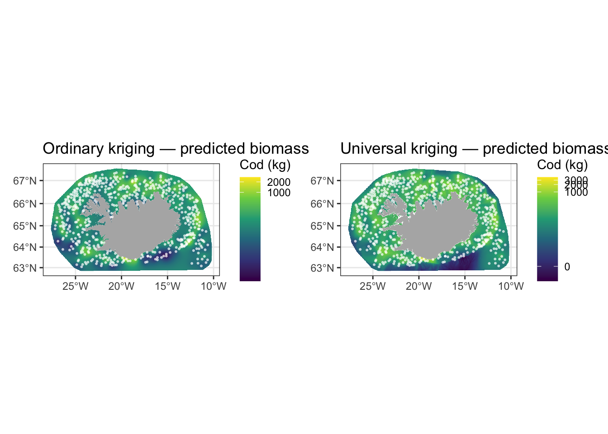
GAMs with spatial smooths
Generalised Additive Models (GAMs) offer a regression-based alternative to kriging that fits naturally into the tidyverse and mgcv modelling workflow. A 2D spatial smooth s(X, Y) over projected coordinates acts as a nonparametric spatial trend surface. Because GAMs are regression models, adding non-spatial covariates (depth, temperature, vessel effects) is straightforward.
The Tweedie distribution (family = tw()) is a natural choice for catch biomass: it handles the mixture of zeros and positive continuous values without requiring a two-stage delta model.
Fit the model
# Extract projected coordinates as columns — mgcv needs them as plain variables
cod_xy <- bind_cols(cod, as_tibble(st_coordinates(cod)))
gam_mod <- mgcv::gam(
kg ~ s(X, Y, k = 60), # 2D spatial smooth; k controls maximum complexity
data = cod_xy,
family = mgcv::tw(link = "log"),
method = "REML" # Restricted maximum likelihood for smooth selection
)
summary(gam_mod)
Family: Tweedie(p=1.852)
Link function: log
Formula:
kg ~ s(X, Y, k = 60)
Parametric coefficients:
Estimate Std. Error t value Pr(>|t|)
(Intercept) 5.69644 0.04459 127.8 <2e-16 ***
---
Signif. codes: 0 '***' 0.001 '**' 0.01 '*' 0.05 '.' 0.1 ' ' 1
Approximate significance of smooth terms:
edf Ref.df F p-value
s(X,Y) 44.18 53.08 6.096 <2e-16 ***
---
Signif. codes: 0 '***' 0.001 '**' 0.01 '*' 0.05 '.' 0.1 ' ' 1
R-sq.(adj) = 0.164 Deviance explained = 38.7%
-REML = 3973 Scale est. = 2.6541 n = 578k = 60 sets an upper bound on the degrees of freedom of the smooth. It should be large enough not to be a binding constraint — check with mgcv::k.check(gam_mod).
Predict onto the grid
# Get coordinates for all non-masked cells
cell_idx <- which(!is.na(terra::values(mask_rst)))
pred_coords <- terra::xyFromCell(target, cell_idx) %>%
as_tibble() %>%
rename(X = x, Y = y)
# Predict with standard errors (for uncertainty)
pred_gam <- predict(gam_mod,
newdata = pred_coords,
type = "response",
se.fit = TRUE)
# Write predictions back into a raster
gam_pred_rst <- mask_rst
gam_se_rst <- mask_rst
terra::values(gam_pred_rst)[cell_idx] <- pred_gam$fit
terra::values(gam_se_rst)[cell_idx] <- pred_gam$se.fit
names(gam_pred_rst) <- "GAM predicted (kg)"
names(gam_se_rst) <- "GAM SE (response scale)"p_gam <- ggplot() +
geom_spatraster(data = gam_pred_rst) +
geom_sf(data = iceland, fill = "grey70", colour = NA) +
geom_sf(data = cod, colour = "white", size = 0.4, alpha = 0.6) +
scale_fill_viridis_c(trans = "log1p", name = "Cod (kg)",
na.value = NA) +
labs(title = "GAM prediction (Tweedie, s(X,Y))") +
theme_bw()
p_gam_se <- ggplot() +
geom_spatraster(data = gam_se_rst) +
geom_sf(data = iceland, fill = "grey70", colour = NA) +
scale_fill_viridis_c(name = "SE (kg)", na.value = NA, option = "magma") +
labs(title = "GAM prediction standard error") +
theme_bw()
p_gam + p_gam_se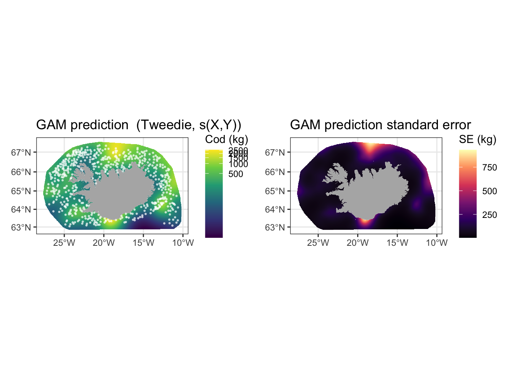
NoteExercise
Examine the model summary. What proportion of deviance is explained? Is the effective degrees of freedom of
s(X, Y)close to theklimit? If so, increasekand refit.Add bottom depth as a covariate:
kg ~ s(X, Y, k = 60) + s(depth, k = 10). You will need to extract depth values at each station from a depth raster (see therasters.qmdchapter). Compare AIC between the two models. Does depth improve the fit?Check residual spatial autocorrelation using a variogram of the GAM residuals. If autocorrelation remains, what does that suggest about the model?
Kernel density estimation
Kernel density estimation (KDE) is a non-parametric method for estimating the spatial density of a point pattern. Rather than binning points into discrete grid cells, KDE places a smooth kernel – typically Gaussian – over each observation and sums the contributions at every location to produce a continuous surface.
In its basic form, every point contributes equally to the surface. But when each point carries a measured quantity, such as catch biomass, we can weight each observation’s kernel by that value to produce a weighted KDE. The result answers a more ecologically meaningful question: not just where were hauls made? but where was cod biomass concentrated?
library(tidyverse)
library(sf)
library(rnaturalearth)
# Station positions — one row per tow
stations <- read_csv("data/is_smb_stations.csv")
# Species catch — one row per species per tow; filter to cod only
biol <- read_csv("data/is_smb_biological.csv") |>
filter(species == "cod")
# Left join: every station is retained; stations with no cod get kg = 0
cod <- stations |>
left_join(biol |> select(id, kg), by = "id") |>
mutate(kg = replace_na(kg, 0)) |>
filter(!is.na(lon1), !is.na(lat1))
iceland_sf <- ne_countries(country = "Iceland", scale = "medium")
# Shared spatial limits used for both kde() and coord_sf()
lims <- c(range(cod$lon1) + c(-1, 1),
range(cod$lat1) + c(-1, 1))Weighted KDE with the ks package
MASS::kde2d() does not support observation weights. The ks package provides ks::kde(), which accepts a weight vector w and is otherwise straightforward to use.
library(ks)
# Coordinates as a two-column matrix — required by ks::kde()
coords <- cod |> select(lon1, lat1) |> as.matrix()
# Weights: normalise so they sum to 1 (ks requires this)
w <- cod$kg / sum(cod$kg)
# Estimate the weighted density.
# H is the bandwidth matrix; use ks::Hpi() for automatic plug-in selection.
H <- ks::Hpi(coords) # plug-in bandwidth selector
# Perform the kernel density estimate
kde_wt <- ks::kde(x = coords, H = H, w = w,
xmin = c(lims[1], lims[3]),
xmax = c(lims[2], lims[4]),
gridsize = c(200, 200))ks::Hpi() uses a plug-in bandwidth selector that estimates the optimal smoothing matrix from the data. It is more principled than Silverman’s rule for bivariate data because it allows different bandwidths in x and y and accounts for correlation between the two dimensions.
Place the results into a raster:
kde_rst <- terra::rast(
nrows = length(kde_wt$eval.points[[2]]),
ncols = length(kde_wt$eval.points[[1]]),
xmin = lims[1], xmax = lims[2],
ymin = lims[3], ymax = lims[4],
crs = "EPSG:4326",
vals = t(kde_wt$estimate) # transpose: ks stores density as [x, y], terra expects [row, col]
)library(tidyterra)
ggplot() +
geom_spatraster(data = kde_rst) +
geom_sf(data = iceland_sf, fill = "grey70", colour = "white",
linewidth = 0.3) +
scale_fill_viridis_c(option = "magma", direction = -1,
name = "Weighted\ndensity", na.value = NA) +
coord_sf(xlim = lims[1:2], ylim = lims[3:4]) +
scale_x_continuous(NULL, NULL) +
scale_y_continuous(NULL, NULL) +
theme_bw() +
labs(title = "Weighted KDE — cod biomass, SMB 1990–present",
caption = "Weights proportional to catch (kg); bandwidth: plug-in selector")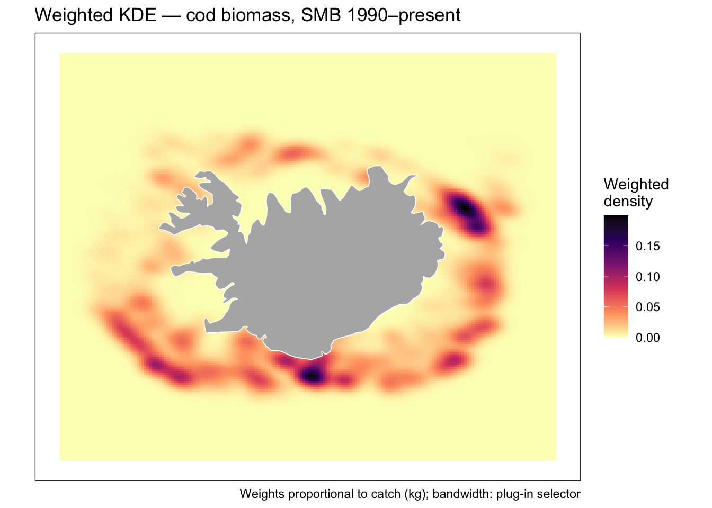
NoteA note on projection
ks::kde() operates in the coordinate space supplied. In geographic degrees at Iceland’s latitude (~65°N), one degree of longitude spans approximately 47 km while one degree of latitude spans ~111 km. The plug-in bandwidth selector Hpi() will partially compensate by fitting an anisotropic bandwidth matrix, but for a strictly correct density estimate you should reproject to a local equal-area CRS (such as ISN2016, EPSG:8088) before calling kde().
Summary
- Voronoi polygons are the simplest possible interpolator and a useful baseline. Use them to sanity-check other results.
- IDW is fast and requires no model fitting. The power parameter p controls the degree of localisation. Use LOOCV to choose p.
- Ordinary kriging is the gold standard for continuous spatial prediction when the stationarity assumption is reasonable. It uniquely provides a spatial uncertainty estimate alongside the prediction.
- Universal kriging extends OK by incorporating external covariates (depth, temperature) into the spatial mean structure.
- GAMs with spatial smooths are a flexible regression-based alternative that integrate naturally with other predictors and are available in a familiar modelling framework (
mgcv). - Weighted KDE is not an interpolation method in the strict sense, but is a powerful exploratory tool for visualising where a quantity is spatially concentrated. It requires no model fitting and scales well to large datasets. Use it before interpolating to understand the broad spatial structure of your data.
- Always cross-validate your interpolation. A method that looks smooth and plausible can still perform poorly out of sample.
- Working in log space (then back-transforming) is almost always preferable for skewed positive data such as fisheries catch biomass.
Further reading
- Pebesma & Bivand (2023). Spatial Data Science with R and the sf and stars packages. https://r-spatial.org/book/
- Wood, S.N. (2017). Generalized Additive Models: An Introduction with R (2nd ed.). Chapman & Hall.
- Cressie, N. (1993). Statistics for Spatial Data. Wiley.
gstatvignette: https://cran.r-project.org/web/packages/gstat/vignettes/gstat.pdfautomappackage: https://cran.r-project.org/package=automap